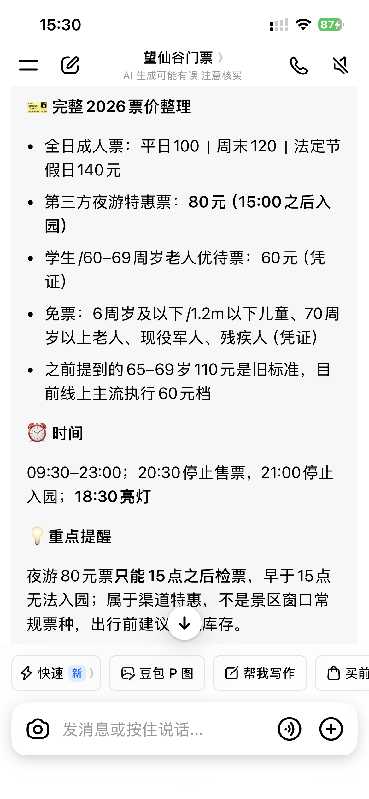
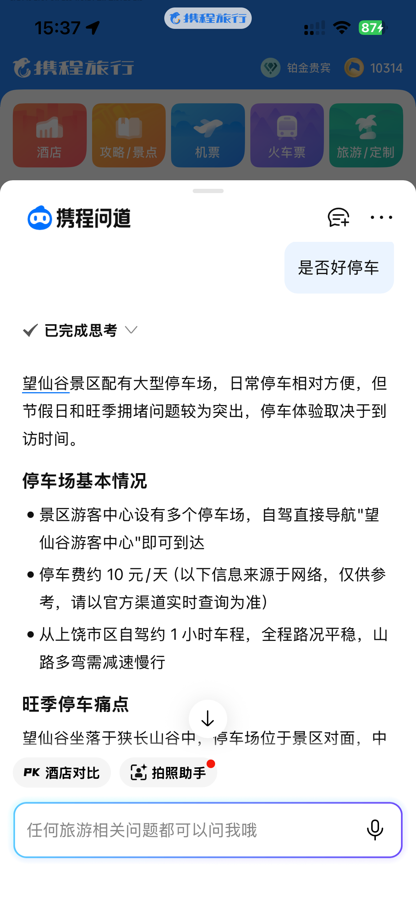
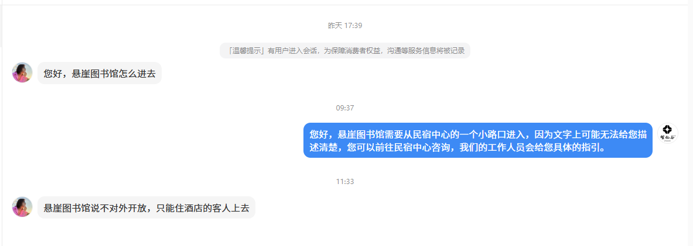
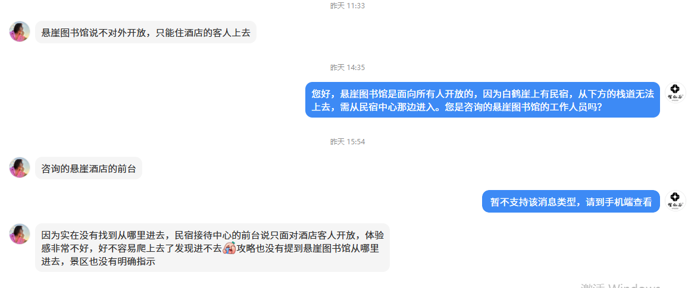
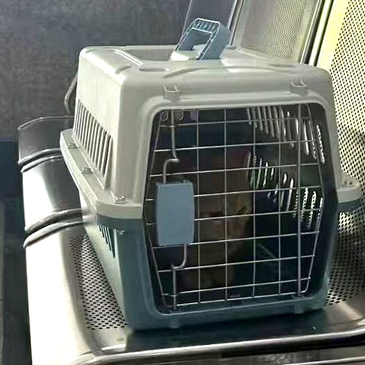

01官方信息解释权外溢
第三方平台可能继续使用旧票价、旧政策，游客最终仍需向景区确认，错误信息却已经影响品牌体验。
以对话式服务承接游客需求，拓展新体验与新交易机会。
外部 AI 正成为游客新的决策入口，品牌对信息与服务入口的主导权正在外移。本次拟启动官方智能服务试点，以信息治理和 AI 工具为底座，创造新服务、新体验与新交易，验证复购、客单及新增长机会。
游客的问题谁来回答：外部信息失真，内部口径不一
02解决方案官方智能服务试点：一个入口回答多场景问题
03系统架构在现有小程序之上，增加一层智能服务能力
04执行落地四步试点路径与四条项目红线，风险可控
05投入产出费用构成与治理团队，数据验收后再扩大投入
多渠道、多触点、多回答形式：同一个问题，外部 AI 有 AI 的说法，员工有员工的说法，评论区有评论区的说法。游客得到的答案取决于他在哪里问——而不是取决于官方口径。




*10月仅统计 10/1–10/13
第三方平台可能继续使用旧票价、旧政策，游客最终仍需向景区确认，错误信息却已经影响品牌体验。
停车、入园、退改等高频问题反复占用人工；旺季咨询叠加时，复杂投诉和重要游客服务反而无法优先处理。
票务、酒店、演艺和售后信息分散在不同系统与页面，客服依靠人工查找；咨询止步于问答，无法延伸为服务办理与交易机会。
解决方案不是再增加一个渠道，而是建立一个统一入口。下面用一家四口带宠物自驾的真实场景，演示游客可能问到的一些问题。
游客画像：一家四口 + 宠物狗 + 教师 · 暑期 · 南昌自驾。
打开全屏体验用 AI 创造新服务、新交易、新体验；立项判断看它能否解决明确问题、形成可核验收益，并在现有系统边界内安全落地。
以对话式服务满足个性化需求，提升游客体验。
01匹配需求与产品，拓展多次消费及客单提升机会。
02强化信息权威，在官方渠道承接咨询、决策与交易。
03发现未满足需求，为新产品、新服务提供依据。
04沉淀服务标准与方法，支持更多业务场景落地。
05以真实应用成果打造行业示范，提升品牌影响力。
06
知识录入、审核、版本与权限管理——谁录入、谁审核、何时生效，全程可追溯。
新员工与全员自助查询现行政策口径，入职即查、旺季前速查，不靠问同事。
新知识点自动出题，定期考核与成绩管理——新员工转正考、老员工季度考。
载体建议：嵌入现有 OA 或企业微信工作台，员工零新增安装，点开即用。
项目不替换现有小程序，也不重建票务、酒店和订单系统。通过一个统一对话入口连接官方知识与现有业务能力：标准问题由AI回答，明确事项进入办理，复杂问题携带上下文转交人工。
知识库决定"能说什么"，字段规则决定"还缺什么"，授权接口决定"可以办理什么"；超出边界时立即转人工。
判断游客想问什么：购票、订房、政策还是投诉
关键信息缺失时先追问：日期、人数、房型
只从官方知识库取答案，从授权接口查实时数据
直接答复，并给出可跳转的办理入口
简单问题当场办结，复杂问题带上下文转人工
学其底座 · 不学其形态 · 按履约能力开放
按立项与评估、开发与知识库建设、试点运行、决策二期四步推进；每一阶段都设出口标准——数据不达标，不进入下一步。
立项与评估期（1 个月），从本次汇报开始。口径治理最先启动——它不依赖任何系统开发，却决定 Agent 上线后说什么、怎么说。
Agent 不是新的业务数据源：所有价格、库存、订单、支付、核销与售后结果均来自权威系统；知识内容必须有责任人、版本和生效日期。
不修改核心交易系统
不让模型直接写入订单
不以非官方内容回答关键政策
不让复杂投诉停留在机器人环节
Agent 建成只是起点：对外让游客在各触点看到它，对内让员工先会查、敢推荐——用起来，试点数据才立得起来。
上线后按周看访问量、提问量、独立解决率；使用率先调入口位置与引导文案，使用量与满意度进入 05 验收指标，作为二期依据。
投入说明 · 费用、人力与验收：以下按顺序说明——先看费用投入（试点四类建设费用构成），再看人力投入（最小治理团队与外部开发团队的责任分工），随后是投入产出分析与收益验收指标。整体按小成本验证推进。
三种建设模式并列比较，最终采用方案以技术评估结论为准。
注：三种模式的最终取舍，以技术评估结论为准。
PM 主持，全员参加——进度、风险、待决策事项
一阶段每周 1 次逐领域过清单，争议口径 PM 当场裁决或报高层
任何知识必须有责任人、版本号、生效日期，缺一不上线
变更 48 小时内入库，旧口径同步回收
对应领域确认人第一承接，PM 每周抽查转人工质量
运营与评测不属于建设费用，而是试点期间的衡量机制——用数据决定追加投入；指标基线与目标值在试点启动后依据采集数据确定。
问答准确率、独立解决率、转人工与投诉样本，需明确运营负责人。
以真实咨询量和处理时长算出的人工基准成本为对照，衡量 AI 服务成本。
试点一个月数据达预期再追加投入，不达预期随时暂停，损失可控。
四组指标用于参照试点是否带来真实业务转变，是验收的重点；具体指标口径与目标值，需立项后进一步明确。
统一信息是底座，升级服务是核心，创造增量是目标。
一线真实问题采集已启动，申请批准「官方智能服务试点」立项，从临时整顿转为正式治理。
指定项目业务负责人与信息部技术负责人，相关部门指定官方回答确认人。
授权开展接口评估与供应商询价；外部公司开发，代码、文档、接口规范全部交付公司。
小成本试点，试点开发费用控制几万级，模型调用每月可封顶；不达预期可随时暂停。
首版知识库、技术方案与正式报价完成后，再提交一期开发预算与合同审批。
以下为试点可覆盖的服务模块明细，供答疑时展开参考，不属于本次立项申请范围。